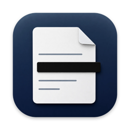

PDF Privacy
Redact PDFs on your Mac. Nothing is ever uploaded.
Need help or found something wrong? Write to pdfprivacy@handlinproperties.com. Please do not send a private file. Describe what happened, or send a made-up file that shows it.
Is a redaction really gone?
Yes. PDF Privacy removes the letters, drawings and pictures under each box from the file itself, not just covers them. After saving it opens the saved copy again and checks that nothing is left under any box. If the check finds anything, it says so and does not call the file done.
Black out a word everywhere it appears
Choose Find, type the word, name or number, then Mark all. Every match on every page is marked. Save to remove them.
What is "hidden in the file"?
Before saving, the app shows what the file holds that the page does not show: text drawn invisible, an old scan's text layer, the author and title details, comments and attachments. You choose what to keep and what to remove.
Where did my earlier version go?
Save writes into the file you opened. The version before is kept on your Mac. Choose File, Revert To to go back.
Sign on my iPhone
Your Mac and iPhone need to be on the same Wi-Fi network. Choose Sign, add a signature, pick iPhone and scan the code with the iPhone's camera. Nothing goes over the internet.
Privacy
PDF Privacy collects no data and never sends your files anywhere. Read the privacy policy.